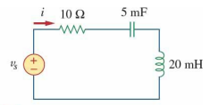
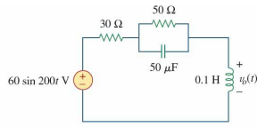
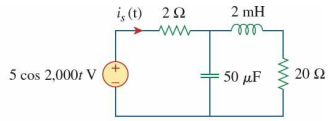

ECET 250E · Chapter 9
Problem Set 8
Clean worked solutions · Short steps, full calculations.
Problem Set 9 solutions →
9.1 · Read a sinusoid
Given v(t) = 50 cos(30t + 10°) V, find amplitude, period, frequency, and the voltage at 10 ms.
Identify the constants
Compare with v(t) = Vm cos(ωt + φ).
Vm=50 V,ω=30 rad/s,ϕ=10∘ Find period and frequency
One cycle is 2π radians.
T=ω2π=302π=0.20944 sf=T1=2π30=4.7746 Hz Substitute the time
Convert the phase to radians before adding it to ωt.
t=10 ms=0.010 sv(0.010)=50cos(30(0.010)+10180π)=50cos(0.474533)=44.4753 V
AnswerVm=50 V,T=209.44 msf=4.775 Hz,v(10 ms)=44.48 V Here, 0.3 rad = 17.19°. Keep radians and degrees consistent.
9.5 · Compare phase
Given v₁ = 45 sin(ωt + 30°) V and v₂ = 50 cos(ωt − 30°) V, find the phase difference and which voltage lags.
Use cosine for both
Use sin θ = cos(θ − 90°).
v1=45cos(ωt−60∘)v2=50cos(ωt−30∘) Compare the phase angles
The larger cosine phase leads.
Δϕ=(−30∘)−(−60∘)=30∘
Answerv1 lags v2 by 30∘ 9.6 · Find which waveform leads
Compare each pair using positive-amplitude cosine forms.
(a) Convert current to cosine
Given v = 10 cos(4t − 60°) and i = 4 sin(4t + 50°).
i=4cos(4t−40∘)(−40∘)−(−60∘)=20∘i leads v by 20∘ (b) Remove the negative amplitude
Given v₁ = 4 cos(377t + 10°) and v₂ = −20 cos(377t). Add 180° to the phase of v₂.
v2=20cos(377t+180∘)180∘−10∘=170∘v2 leads v1 by 170∘ (c) Combine the two terms in x
Given x = 13 cos(2t) + 5 sin(2t) and y = 15 cos(2t − 11.8°).
X=13−j5=13.928∠−21.038∘x=13.928cos(2t−21.038∘)Δϕ=−11.8∘−(−21.038∘)=9.238∘
Answer(a) i leads by 20∘(b) v2 leads by 170∘(c) y leads x by 9.24∘ 9.8 · Complex arithmetic
Evaluate each expression in rectangular form. Use polar form for division and rectangular form for addition.
(a) Divide, then add j2
Convert the denominator to polar form.
7.5−j1060∠45∘+j27.5−j10=12.5∠−53.130∘=4.8∠98.130∘+j2=−0.67882+j4.75176+j2=−0.67882+j6.75176 (b) Work out each fraction
Multiply the first denominator, then divide each complex fraction.
(6−j8)(4+j2)32∠−20∘+−10+j2420(6−j8)(4+j2)=40−j2040−j2032∠−20∘=0.71085+j0.08181−10+j2420=−0.29586−j0.71006Sum=0.41499−j0.62825 (c) Multiply, then add 20
Convert 5 + j12 to polar form.
20+(16∠−50∘)(5+j12)5+j12=13∠67.380∘=20+208∠17.380∘=20+198.5035+j62.1317
Answer(a) −0.6788+j6.7518(b) 0.4150−j0.6283(c) 218.5035+j62.1317 9.16 · Convert to phasors
Use positive-amplitude cosine forms. These phasors use peak values.
(a) −20 cos(4t + 135°)
A negative amplitude is a 180° phase shift.
−20cos(4t+135∘)=20cos(4t−45∘)Xa=20∠−45∘ (b) 8 sin(20t + 30°)
Subtract 90° to change sine into cosine.
8sin(20t+30∘)=8cos(20t−60∘)Xb=8∠−60∘ (c) 20 cos(2t) + 15 sin(2t)
Convert each term, then add in rectangular form.
Xc=20∠0∘+15∠−90∘=20−j15∣Xc∣=202+152=25∠Xc=tan−1(−15/20)=−36.870∘
AnswerXa=20∠−45∘,Xb=8∠−60∘Xc=25∠−36.87∘ 9.20 · Find impedance
The input current is 7.5 cos(10t + 30°) A and the output voltage is 120 cos(10t + 75°) V.
Write the phasors
Both signals already use cosine.
I=7.5∠30∘ A,V=120∠75∘ V Divide voltage by current
Divide magnitudes and subtract angles.
Z=IV=7.5120∠(75∘−30∘)=16∠45∘=16cos45∘+j16sin45∘
AnswerZ=16∠45∘ Ω=(11.314+j11.314) Ω 9.23 · Combine sinusoids
Combine each pair into one cosine using phasors.
(a) Voltage
Given v = 110 sin(20t + 30°) + 220 cos(20t − 90°) V.
V=110∠−60∘+220∠−90∘=55−j95.263−j220=55−j315.263∣V∣=552+315.2632=320.024∠V=tan−1(−315.263/55)=−80.104∘ (b) Current
Given i = 30 cos(5t + 60°) − 20 sin(5t + 60°) A. Keep the minus sign when adding the phasors.
I=30∠60∘−20∠−30∘=(15+j25.981)−(17.321−j10)=−2.321+j35.981∣I∣=36.056,∠I=93.690∘
Answerv(t)=320.02cos(20t−80.10∘) Vi(t)=36.06cos(5t+93.69∘) A The current phasor is in quadrant II, so its phase is greater than 90°.
9.35 · Series RLC current
Find i when vₛ(t) = 50 cos(200t) V.

Find the impedances
Use ω = 200 rad/s, L = 0.020 H, and C = 0.005 F.
ZR=10 ΩZL=jωL=j(200)(0.020)=j4 ΩZC=jωC1=−j200(0.005)1=−j1 Ω Add the series impedances
The same current flows through all three components.
Z=10+j4−j1=10+j3=10.440∠16.699∘ Ω Divide voltage by impedance
Return to the time domain using the same cosine reference.
I=10.440∠16.699∘50∠0∘=4.789∠−16.699∘ A
Answeri(t)=4.789cos(200t−16.70∘) A The net reactance is inductive, so current lags the source voltage.
9.42 · Inductor voltage
Calculate vₒ(t) for the circuit shown.

Convert to phasors
Use a cosine reference for the sine source.
Vs=60∠−90∘=−j60 VZL=j(200)(0.1)=j20 ΩZC=j(200)(50×10−6)1=−j100 Ω Combine the parallel branch
The 50 Ω resistor is in parallel with the capacitor.
Zp=50−j10050(−j100)=40−j20 ΩZtotal=30+(40−j20)+j20=70 Ω Use the voltage divider
The output is across the inductor.
Vo=VsZtotalZL=(−j60)70j20=17.1429∠0∘ V
Answervo(t)=17.14cos(200t) V=17.14sin(200t+90∘) V 9.47 · Source current
Determine iₛ(t) for the circuit shown.

Find the impedances
Use ω = 2000 rad/s, L = 0.002 H, and C = 50 μF.
Vs=5∠0∘ VZL=j(2000)(0.002)=j4 ΩZC=j(2000)(50×10−6)1=−j10 Ω Combine the branches
The capacitor is in parallel with the series 20 Ω resistor and inductor.
Zp=−j10+20+j4(−j10)(20+j4)=20−j640−j200=4.5872−j8.6239 Ω Add the 2 Ω resistor and solve
Divide the source voltage by the total impedance.
Ztotal=2+Zp=6.5872−j8.6239=10.8518∠−52.626∘ ΩIs=10.8518∠−52.626∘5∠0∘=0.46075∠52.626∘ A
Answeris(t)=460.75cos(2000t+52.63∘) mA The total reactance is capacitive, so source current leads source voltage.